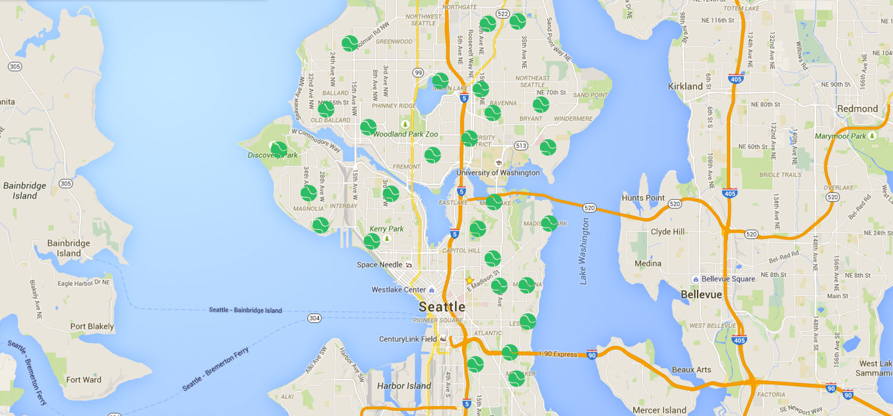

Welcome
Fuzzle is a platform that allows you to connect with other tennis enthusiasts in the greater Seattle area. You can look up courts, find people who are ready to play, and contact them to meet up.
Sign UpFuzzle is a platform that allows you to connect with other tennis enthusiasts in the greater Seattle area. You can look up courts, find people who are ready to play, and contact them to meet up.
Sign UpWith Fuzzle, you can create a player card with your personal information, including your name, gender, location and your USTA NTRP rating score based on your level of play. From there, you can view other users' player cards and send them invitations to meet and play.
Location: Capitol Hill
Skill Level: 7.0 - World Class
Gender: Male
Location: University District
Skill Level: 3.0 - Intermediate
Gender: Male
Location: Snohomish
Skill Level: 6.0 - Pro
Gender: Male
If you're just looking to find a court near you, you can use Fuzzle's map feature, which conveniently displays all of the public tennis courts registered by the Seattle parks department.
 Find a Court